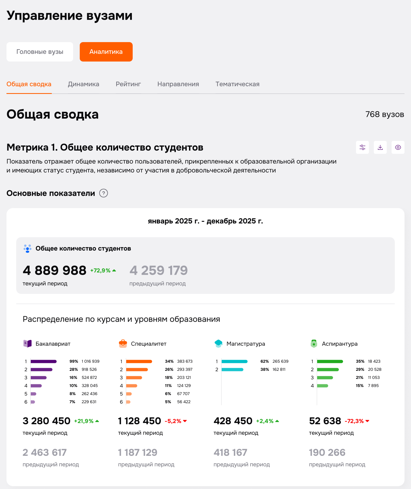
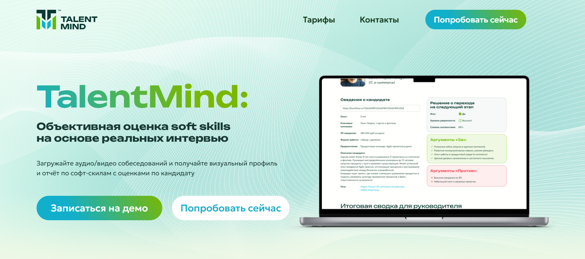

01B2B · UX/UI
B2B / UX в деталяхКорзина.
Скидки.
Один сценарий.
Скидки.
Один сценарий.

АШАН Бизнес
UX/UI · Корзина · Лояльность · CheckoutРазвитие отдельных сценариев корпоративных закупок в существующей платформе.
Интерфейсы, аналитика и сайты. Разные задачи — от конкретного UX-сценария до реализации целого проекта.
← На главнуюРазвитие отдельных сценариев корпоративных закупок в существующей платформе.

Визуальное оформление аналитики для образовательных организаций.

Быстрый запуск сайта AI-продукта: Figma, адаптивы и Tilda.

Остальные страницы в Figma и многостраничная реализация на Tilda.

Правила бренда, MVP и детальная работа над сайтом с ИИ.

 От первого знакомства — к заявкеСмотреть кейс ↗
От первого знакомства — к заявкеСмотреть кейс ↗Сайт с нуля на Tilda и SEO. Путь от знакомства со школой до заявки на пробный урок.
Расскажу о своём опыте и покажу проекты,
близкие вашим задачам.